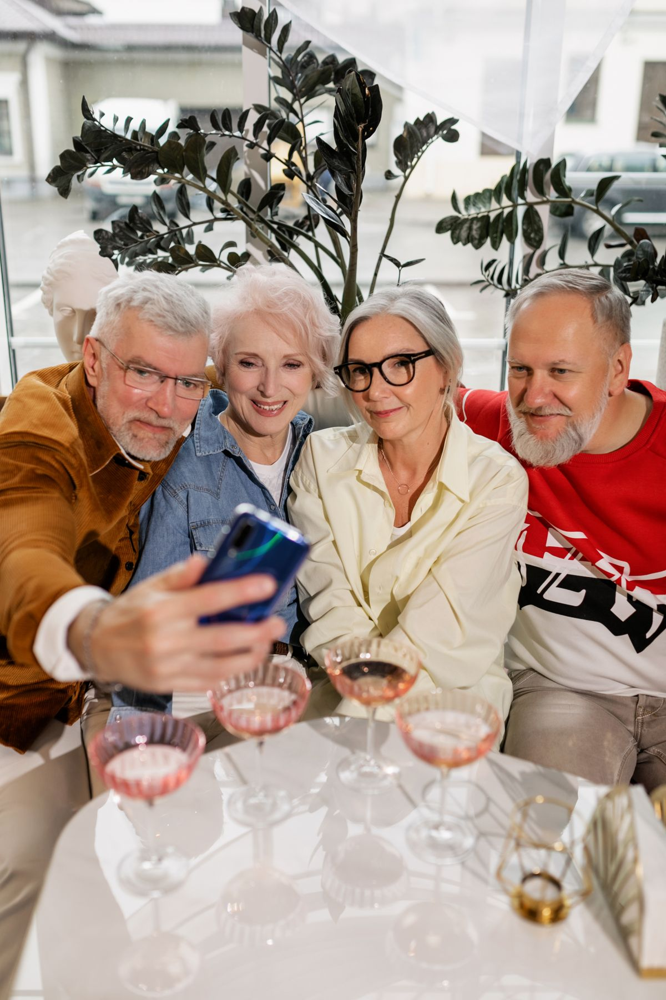

Dar espacio a la palabra.
Escuchar con atención, sin interrumpir y con curiosidad genuina.
UN RECURSO PARA ENCONTRARNOS
Pequeñas experiencias que nos acercan.
Un espacio para descubrir actividades sencillas que invitan a recordar, explorar capacidades, compartir intereses y fortalecer los vínculos con las personas mayores.
Explorar las experiencias ↗UNAD · PSICOLOGÍA · SEMILLERO COMMUNITY

EL ORIGEN DE ESTE ESPACIO
Este recurso nace de una práctica profesional de Psicología de la UNAD, desarrollada en el Semillero Community, sector Barandillas, Zipaquirá.
Una colección de ideas sencillas para acercarnos a las personas mayores desde la escucha, el respeto y la alegría de compartir.
Conoce el proyecto ↗UN RECORRIDO PARA COMPARTIR
Explora a tu ritmo. No hay respuestas correctas ni una única manera de participar.
MEMORIA Y APRENDIZAJE
Una palabra, una fotografía o un objeto pueden abrir la puerta a una buena conversación.
¿Qué historia te gustaría compartir a partir de una fotografía o un objeto especial?
Deja que esta palabra te inspire un recuerdo, una imagen o una asociación. Puedes compartirlo en voz alta o guardarlo para ti.
Piensa en una palabra que relaciones con lluvia. No hay una respuesta única.
Puede ser algo que usamos para protegernos, un sonido o un olor que aparece cuando llueve.
ATENCIÓN Y VIDA DIARIA
Prestar atención también puede ser una oportunidad para conversar y disfrutar de lo cotidiano.
Busca diferencias entre dos imágenes o clasifica objetos cotidianos por sus colores, usos o formas.
Ordena estos pasos como los harías habitualmente. Usa las flechas para mover cada paso.
Hay distintas maneras de realizar una actividad. Esta es solo una secuencia posible.
VÍNCULOS Y PARTICIPACIÓN
Los intereses pueden ser un punto de partida para encontrarnos con otras personas y descubrir espacios de participación.
¿Con quién te gustaría compartir una actividad? ¿Hay algún lugar de encuentro que disfrutes?
Elige todas las actividades que te llamen la atención. Después, descubre algunas ideas para compartirlas.
AUTONOMÍA COTIDIANA
Reconocer lo que hacemos, lo que elegimos y los apoyos que preferimos también es una forma de cuidar nuestra autonomía.
Cada persona decide cómo participar y qué apoyo desea recibir. Sus preferencias son importantes.
Para cada actividad, selecciona la opción que prefieras. Puedes dejar alguna sin marcar.
Tus elecciones permanecen solo en este navegador mientras la página esté abierta.
ESTAR CERCA, CON RESPETO
Pequeños gestos que pueden hacer una gran diferencia en la manera de compartir.
Escuchar con atención, sin interrumpir y con curiosidad genuina.
Respetar los tiempos, las decisiones y las formas de participar.
Dar indicaciones claras y conversar de manera cercana y respetuosa.
Ofrecer apoyo sin reemplazar las capacidades de la persona.
Reconocer sus intereses, preferencias y experiencias propias.
Promover la participación voluntaria, sin presiones ni obligaciones.
Estas ideas son orientaciones cotidianas para compartir; no constituyen un protocolo clínico.
UNA IDEA PARA LLEVAR
“Cada persona tiene historias que contar, capacidades que compartir y nuevas experiencias por descubrir.
Una invitación a seguir encontrándonos, dentro y fuera de esta página.
✳